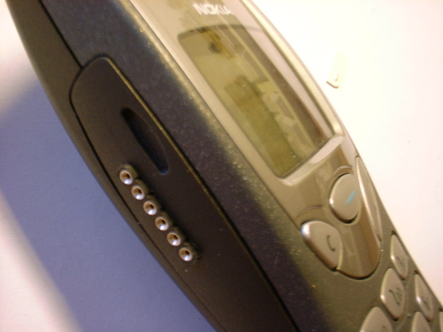

|
Hazle cirugía de precisión a tu 3210 ;) |
|
 |
La cuestión aquí es meterle al Nokia 3210 un par de cosillas que no trae y que vienen muy bien: el vibrador y el conector de datos para enchufarlo al PC. Lo curioso de todo este asunto, es que las conexiones necesarias para ambas cosas vienen en la placa del telefóno, nosotros únicamente nos limitaremos a soldar. Si te acojona soldar vete practicando :) porque me imagino que no querrás quedarte sin teléfono por meterle la chorrada esta del vibrador X'D
Bueno, como ya he dicho antes, solamente tendremos que soldar. Pillamos un destornillador y abrimos el teléfono en canal, hasta que lo tengamos totalmente desguazao, puedes ver una imagen aquí ;)
Sobre cómo abrirlo poco hay que decir, cuando quites la tapa posterior del teléfono, verás la cabeza de dos tornillos en la parte inferior, hay otro par de tornillos bajo al tapa de plástico blanco que hay encima de la batería en la parte superior del móvil. Cuidadín con esta tapa de plástico porque es fácil cargarse las pestañas laterales al hacer fuerza para sacarla. Simplemente tira un poco hacia delante de la tapa, y verás que sale relativamente fácil.
Si te fijas en la placa, verás los conectores que nos interesan. A la derecha del socket para la SIM está el conector de datos, y un poco más arriba está el conector para el vibrador. Bueno, en el gráfico están marcados, así que ahí puedes verlo. OK, siguiente paso... cogemos el vibrador que hayamos pillado de algún servicio técnico de moviles, que hayamos sacado de algún beeper o que nos haya pasado un colega, y lo soldamos con arrojo y valentía, además de con un soldador de como mucho 15W, a no ser que quieras terminar con un bonito trozo de plástico retorcido por el exceso de calor ;) El vibrador encajará perfectamente en un hueco que tiene para tal efecto :) una de las carcasas del móvil, donde colocamos la batería... vamos, ni que lo hubiesen hecho queriendo ;)
Posteriormente, cuando ya tengamos cerrado el móvil tendremos que activar la opción de Aviso por vibración del menú de Sonidos. Para ello tienes que conectar el móvil al PC, y usar algún programilla que te permita activar dicha opción. Yo personalmente he usado el PCLOCALS para el "lavado de cerebro" del móvil ;) lo único que hay que hacer es darle a "set factory values" (en el menú "ME memory functions", luego darle a "set UI and SCM factory values" y por último hacer un "SW reset".
Respecto al conector de datos, lo más sencillo es pillarse una hilera de pines torneados y soldar, de nuevo con coraje, valentía y un soldador de 15W :) en el conector que hay en la placa. La carcasa del móvil habrá que perforarla posteriormente para que el conector quede al aire y no haga falta abrir el movil para conectar el cable como aparecen en otras páginas web. El resultado es un conector acojonantemente cyber que dejará sorprendidos a amistades y desconocidos, ya sabes, el mágico fín de fiesta que llevabas meses esperando ;)
Lo que es el esquema del cable no tiene ningún misterio, el esquema para el 5110/6110 funciona perfectamente. Nosotros personalmente estamos usando el esquema de cable FBUS de NUUKIA World.
Para cuaquier duda, ruego, donación o comentario al respecto, ya sabes a donde puedes dirigirte: FuTuR3 o EagleMan, las quejas e insultos irán directamente a /dev/null ;)
Ángel López González
La tarjeta Opto-triac esta publicada bajo la licencia Creative Commons en la versión Attribution and Share Alike. Es decir se permite copiar, modificar y distribuir este material siempre que se reconozca al autor y se mantenga la misma licencia.
06/Febrero/2006: Publicada esta página en la web IEARobotics
11/Enero/2003: Primera publicación de la página en EagleMan
{kind=link}
{kind=link}
{kind=link}
{kind=link}
{kind=link}
{kind=link}
{kind=link}
{kind=link}
{kind=link}